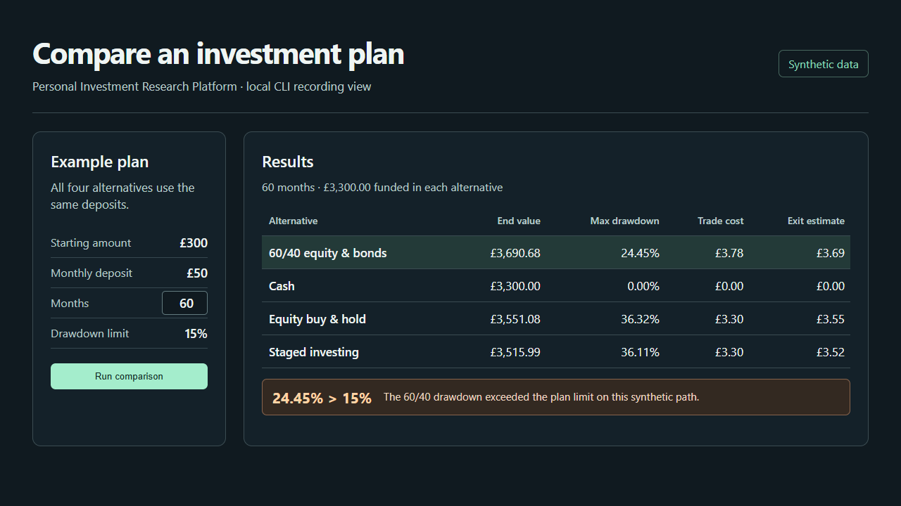

Offline research preview
Personal Investment Research
A negative historical backtest led to a reproducible tool for comparing portfolio plans under declared constraints.
A local comparison workflow with explicit assumptions, shared replay conditions and inspectable cash and units ledgers.



Let a negative result change the question
The fixed discount-entry rule was profitable in 2 of 14 complete historical out-of-sample quarters and trailed a capital-matched buy-and-hold control in all 14. The result is specific to the tested cohort and modelled daily price fills. The study records limitations around the universe, vendor revisions, previous inspection and unknown intraday fill order.
Compare plans on the same assumptions
The current preview screens a versioned catalogue against declared constraints and can return no candidates. Its replay compares an illustrative 60/40 mix with cash, broad-equity buy-and-hold and staged contributions on identical deterministic synthetic GBP paths and costs. The fixture exercises the workflow. Market and prospective validation remain open.
Decisions and collaboration
Guanyu set the research goals, paper-only scope and shared baselines, and retained the negative historical result. ChatGPT and Codex assisted with source research, protocol design, implementation and testing. The output helps inspect assumptions. It gives no investment recommendation or trade instruction.